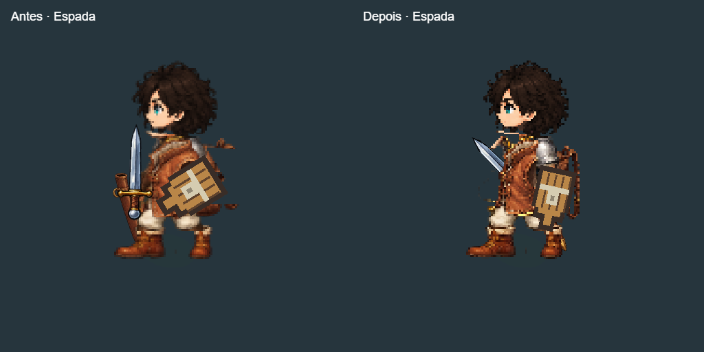
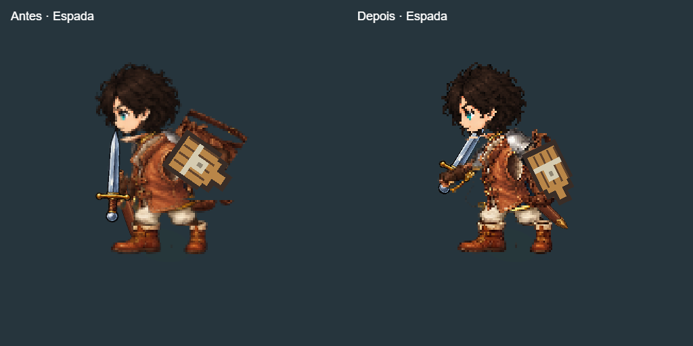
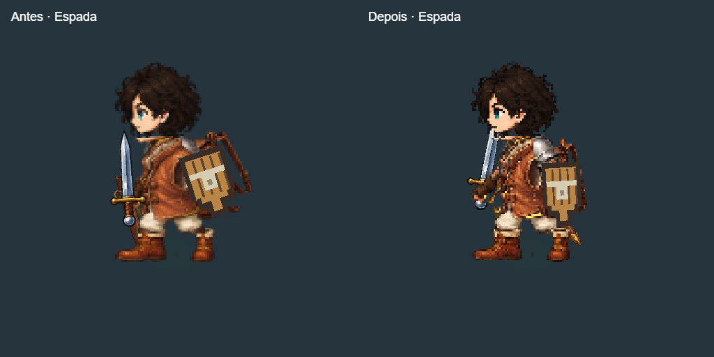
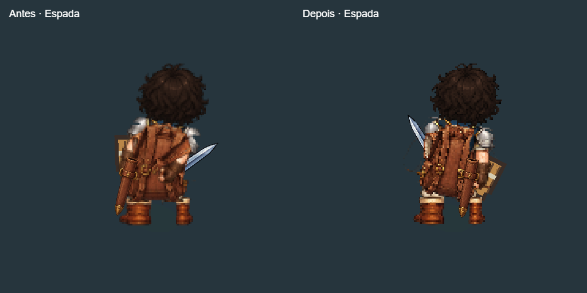
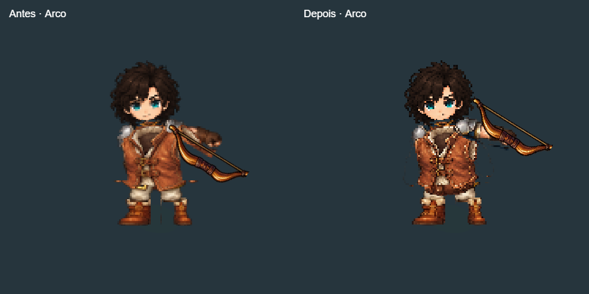
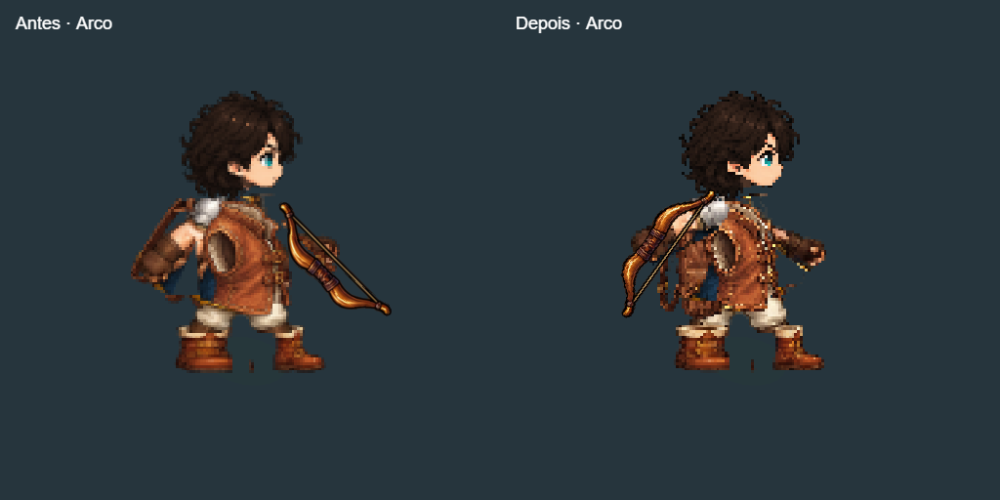
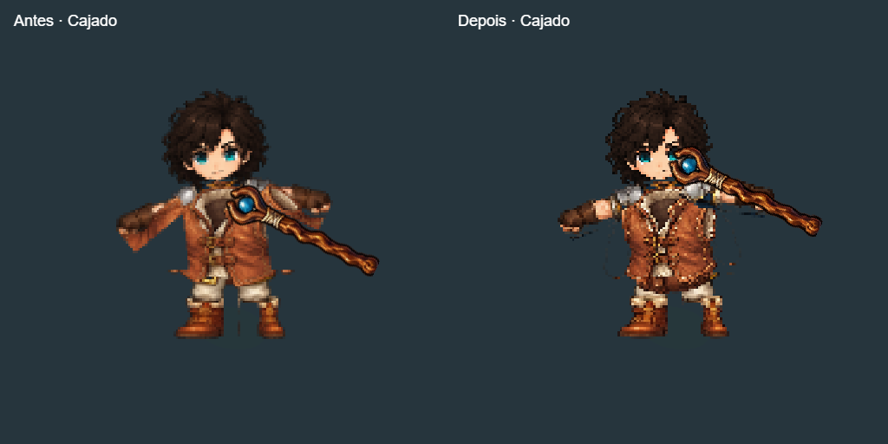
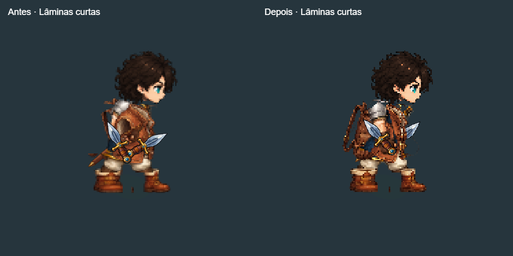

DUNGEON TEACHER · ITERAÇÃO 36Revisão Visual 1
Espada ligada à mão, escudo acompanhando o braço e mochila inteira acompanhando o tronco. Compare o compositor anterior e o corrigido com os mesmos personagens, equipamentos, câmera, direção e pose.
A reprodução usa um guerreiro de cabelo cacheado, espada de treino, escudo de madeira, mochila, colete e botas de viajante. É uma combinação equivalente à captura enviada; a imagem não informa o identificador, a classe ou os atributos exatos do personagem.
Captura de referência fornecida pelo usuário

O RAR fornecido contém 86 arquivos idênticos à galeria original da Iteração 36. A correção foi feita sobre o compositor e os encaixes, preservando as artes originais.
As pranchas contêm 12 estados × 4 direções. São 96 combinações por versão e 9.216 quadros comparativos ao todo. “Percorrer poses” navega pelas capturas; a gravação em movimento está abaixo.
Detalhes do encaixe
Selecione um ponto no personagem acima para ampliar exatamente a mesma região nas duas versões. A ampliação inicial destaca mãos, escudo e tronco.
Antes · ampliaçãoDepois · ampliação
Animação no renderizador do jogo
Gravação de 24 segundos com o SpriteActor real: seis classes, dois corpos, quatro famílias de armas, quatro direções, caminhada, preparação, golpe, recuperação, conjuração e troca de arma. A metade esquerda mostra o compositor anterior; a direita, a revisão. A gravação deste laboratório não é uma medição de FPS da campanha.
Comparação ampliada do guerreiro equivalente à referência. A gravação coletiva está disponível abaixo.
Gravação das seis classes e dois corpos
Quadros extraídos durante a gravação
Detalhes da sequência ampliada








Campanha online
Capturas dos aplicativos ADM e Aluno com contas e banco temporários. Os equipamentos são confirmados pelo servidor. A sequência inclui observador remoto, troca de armas, combate e reinício.
Como foi conferido
A inspeção das pranchas e das sequências foi complementada por testes de projeção da empunhadura, referência sobre os pixels da arma, centro do escudo, profundidade, continuidade, mochila sem cortes, inventário válido e aparência remota. Os testes não substituem o julgamento visual. Consulte o relatório para medições e limites da validação.
Relatório da revisão